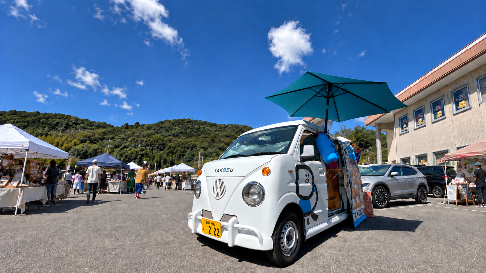
焼きたての香りと、おいしい時間を。TAKORUが街へお届けします。
お気に入りを見つけてね。
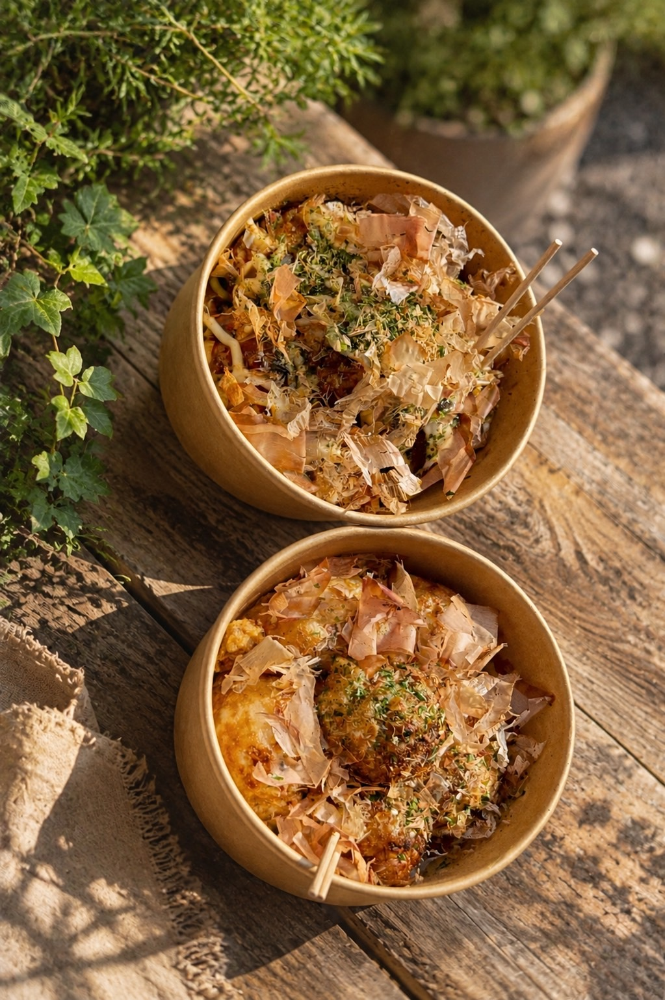
秘伝の出汁が効いた、味わい深いたこ焼き。冷めても美味しい！
素材の味を楽しめる好評の塩味。ぜひ焼きたてをどうぞ！
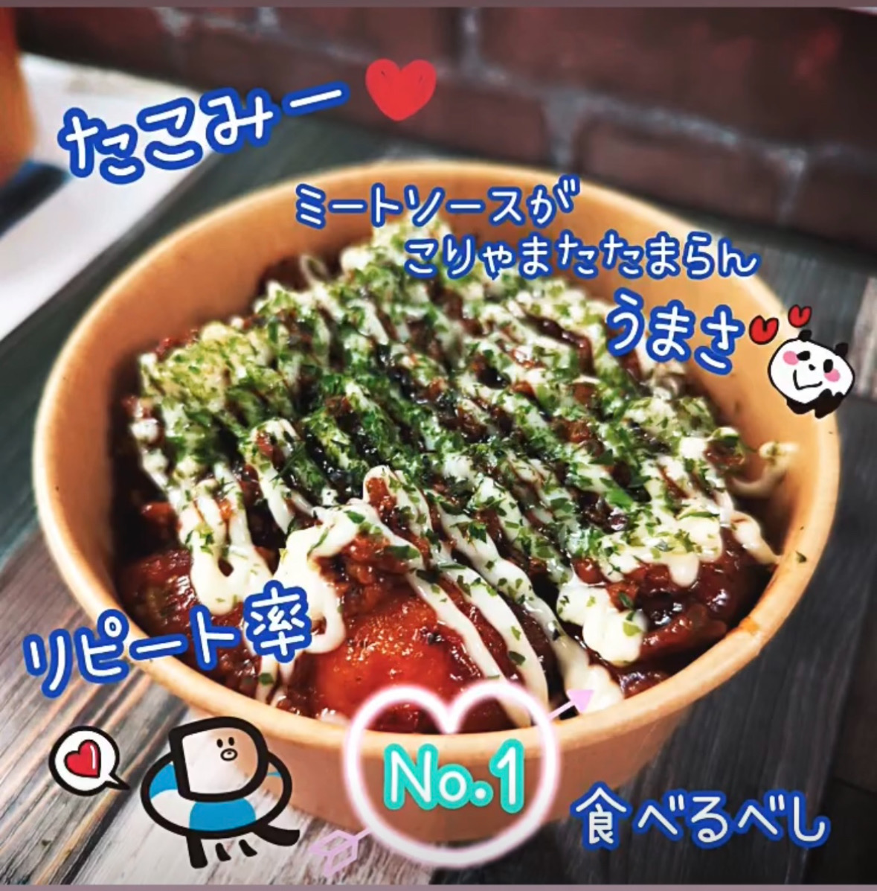
自家製ハンバーグソースを絡めた人気メニュー。「たこみーソース」商品化進行中！
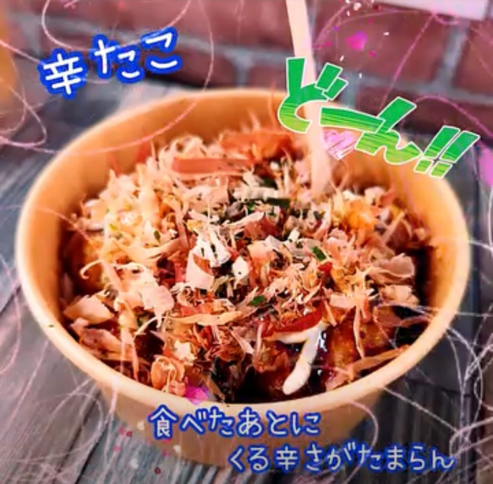
中途半端な辛さじゃない！美味しさそのままで、この辛さ！
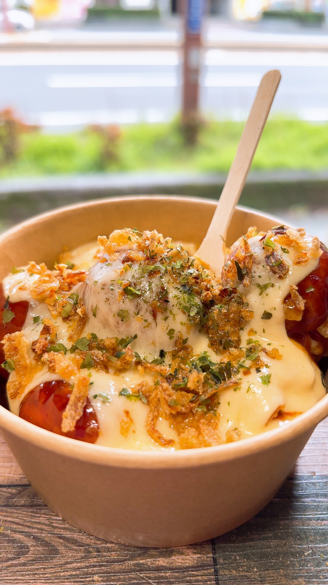
最強の裏メニュー。たこみーとたこちーの禁断のコラボ！究極のやみつき味変たこ焼き！
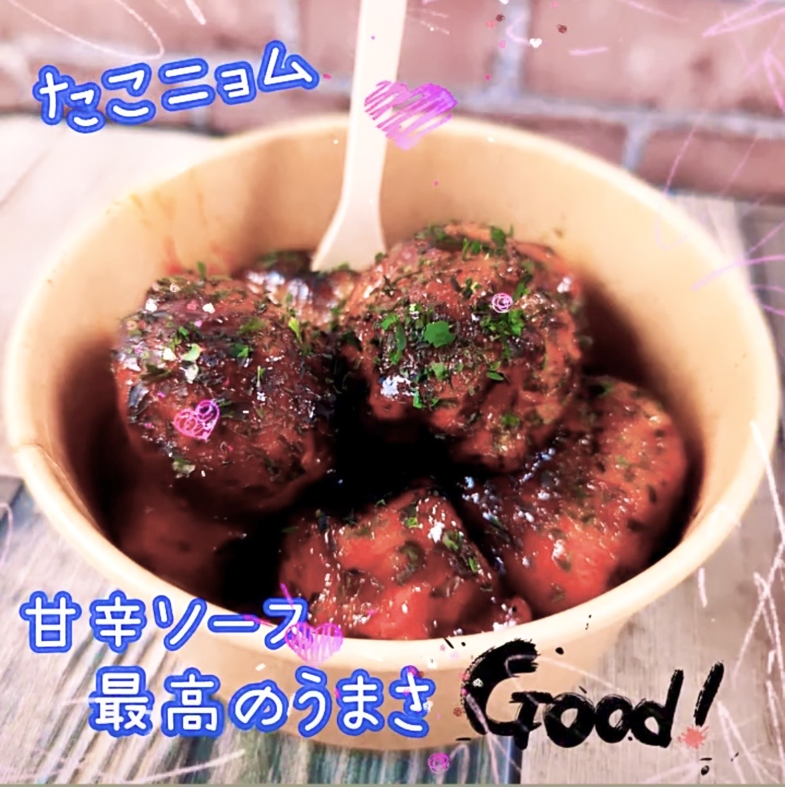
本場韓国の味。ウマ辛がやみつきに🔥
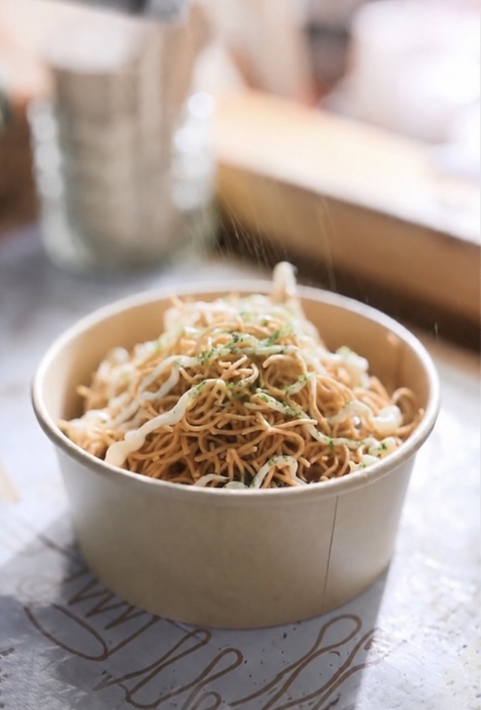
皿うどん麺をたっぷり！特製ソースと相性抜群の長崎味。
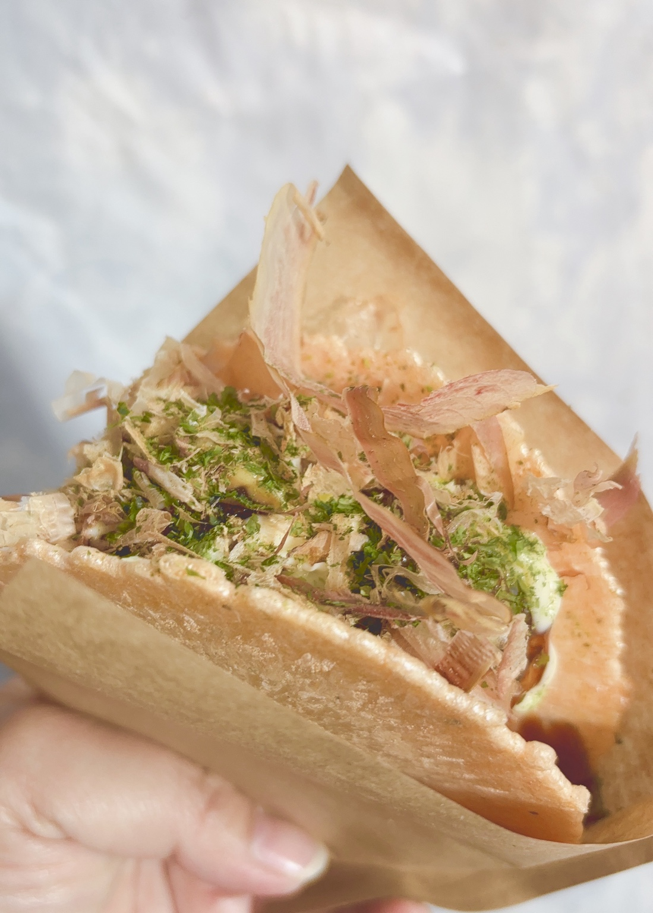
大阪ならではの味。パリッ！もちっ！二重食感が決め手！
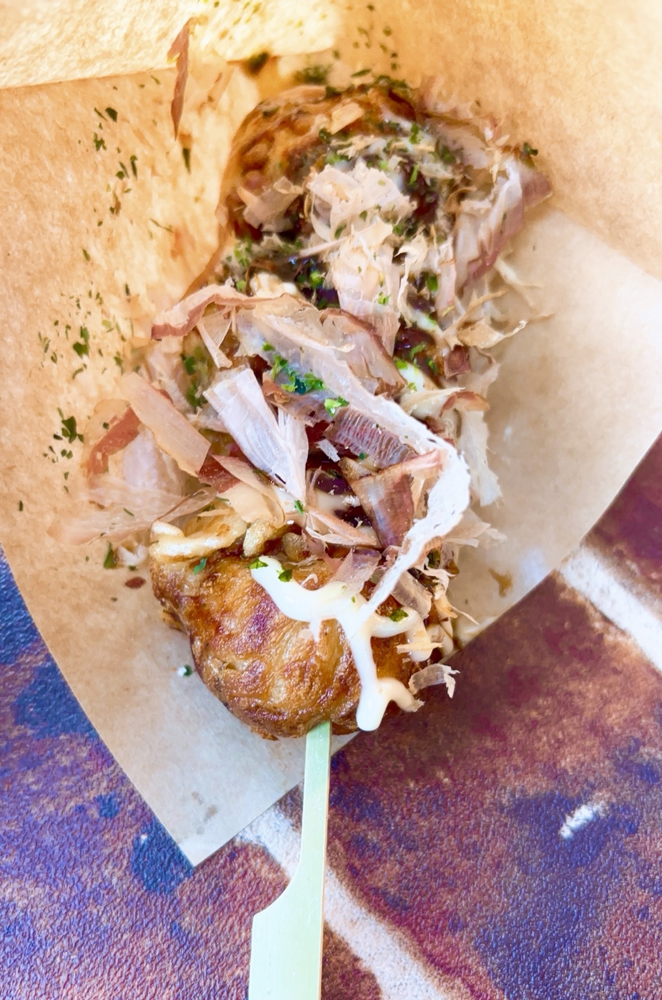
片手で気軽に楽しめる、スティックタイプのたこ焼き。
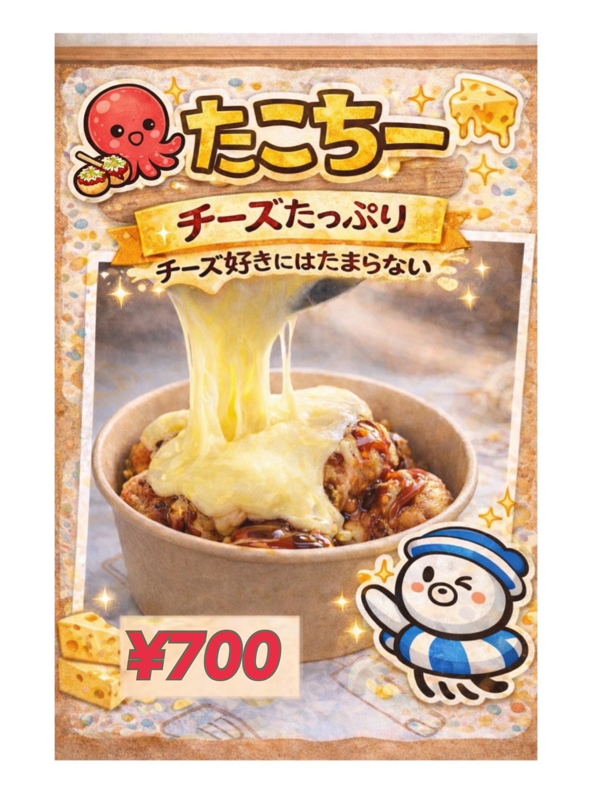
たっぷりチーズで周りをコーティング。チーズ好きが唸る美味しさ！
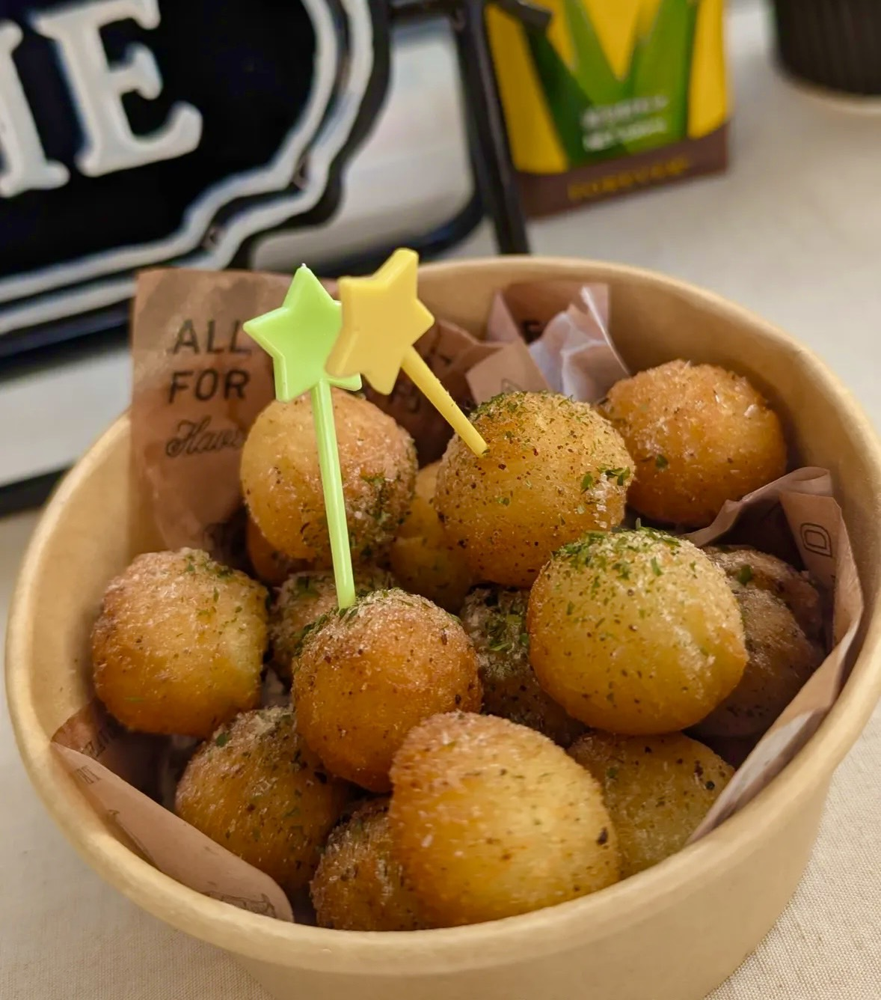
外はカリッ、中はホクホク！バター醤油・コンソメ・塩の3種類から選べます。
最新の出店場所や営業時間はInstagramでご案内しています。
TAKORUのオリジナルソングを聴いてみてね。
TAKORUは、焼きたてのたこ焼きを届けるキッチンカーです。お祭りの日も、いつもの日も。気軽に立ち寄れる、楽しいお店でお待ちしています。
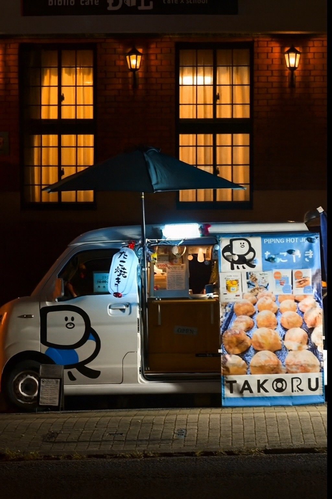